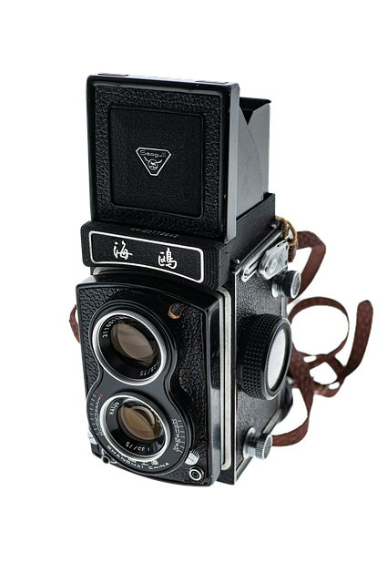
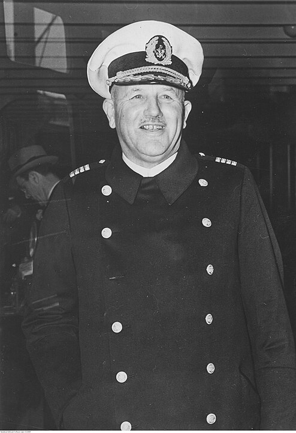

Welcome on my ship S.S. Bremen.
I am Heinrich Aldoph Ahrens and the captain of this ship. I was born
in Geestemünde and grew up here in Bremerhaven on the grounds of the
Rickmers shipyard. My father was a gardener there. At just 14 years of
age I became a cabin boy on a four-masted barque. I attended the
Elsfleth nautical school and became a ship's officer for the
Norddeutscher Lloyd in 1901. I worked for a year in the Imperial
Navy.
After the First World War I worked as a merchant for four years. I
have been sailing again since 1923 and have been the captain of the
Bremen since 1936. And if you feel like it, you can come to New York
with us today (22 August 1939). We are sailing via Southampton and
Cherbourg. Travel with us!
Sure, I'll come with you!